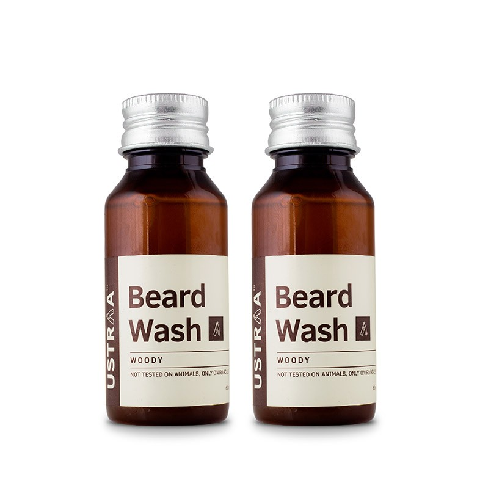

1. START PUMPING IRON
Exercising makes you sweat. Sweating washes toxins and waste from your skin. It unclogs your pores and frees up your hair follicles for new hairs to grow.
Working-out also increases testosterone levels and blood flow to your muscles and skin, carrying nutrients and oxygen to nourish your hair.
The result? Faster hair growth!
2. EAT A HEALTHY DIET
Your diet affects your beard the same way it affects your body. Eat healthy, balanced meals and your hair will grow better, faster, stronger.
Protein is at the top of the list. Hair is partially built of protein so, naturally, consuming it will benefit your beard. Red meats, poultry, eggs, oysters, these are all good sources of protein.
Eat loads of nuts. Nuts are high in biotin, one of the most important vitamins for growing facial hair.
Find fruit high in Vitamin C to improve your immune system and speed up the hair growth. Some good examples: blueberries, strawberries, lemons, oranges, limes, kiwis… and, my personal favorite, avocado (yes, it's a fruit!).
Eat your collard greens, spinach, broccoli, kale, Brussel sprouts. These are high in Vitamin A, which helps maintain your follicles.
3. USE PHOTOS TO DRIVE YOU TOWARDS YOUR GOAL
Photos will inspire and motivate you as you go through the ups and downs of growing your beard.
Collect photos of your dream beard to visualize what you're working towards. Look for photos of men with your beard length for moral support.
Document your own journey. No need to start a blog - though it certainly can't hurt. But take frequent photos of your beard to keep track of how far you've come. Trust me, it's really fun to look back through those later.
4.
WHEN IN DOUBT, GROW IT OUT
Number 1 complaint I get: "I messed up my trim, now I'm back where I started."
If you're not sure what you want, let it grow!
I recommend you start by growing for 1 to 2 months without even looking at a razor. The longer you give your beard the better it will look.
If you can't get away with the natural look for that long, grow during No-shave November. Movember is the perfect excuse to grow your beard for a charity and get through the hardest first stages.
"My beard is saving lives...what's your story?!"
Thinking of shaving it off after a while? Give it at least 1 day of thought for every month you've been growing. Don't crack on an impulse, you'll regret it!
5.
USE BEARD OIL

Nobody likes a shabby looking beard - You have to take care of it! If you're going to do one thing daily, use beard oil.
It feels like heaven, softens up the hair and smells delightful… I live for beard oil.
On top of that, beard oil helps get rid of dandruff and beard flakes. It moisturizes your skin and strengthens your hair follicles.
6.
WASH YOUR BEARD

No, your beard should not smell like feet!
You've got to clean it… but you have to do it right.
Your best bet is to use beard wash.
Normal soap and shampoo are too harsh and will dry out your skin. They often contain silicones, that accumulate on your hairs and block your pores.
You don't want to wash it everyday, though. Washing your beard too often will strip out all the natural oils, necessary to keep your beard healthy.
Find what fits your lifestyle, but I recommend washing once or twice a week.
7.
DON'T BUTCHER YOUR NECKLINE
Where is your neckline? They didn't teach you that in biology class...
When you're ready to clean up your neck hairs, extend your hands in front of you to give two high fives.
Lower your thumbs to make "L" shapes. Bring your hands back to your face, frame your jaw with your index fingers against your sideburns and your thumbs under your chin.
Hair above your thumbs stays. Hair under your thumbs goes.
In other words, your neckline is right above your Adam's Apple, not at the tip of your chin. Follow through to your sideburns to create a nice curve.
And voila! There's your neckline.
8.
THINK ABOUT YOUR WARDROBE
A beard and bad style will make you look shabby.
A beard with good style will make you look trendy.
If your beard is looking a little funny in the growth stages, try rethinking your wardrobe. Wearing nicer clothes will help take attention away from your beard.
9.
GIVE YOUR HEAD HAIR SOME LOVIN
You're going to have bad beard days, we all do. You'll need a lot of self-control for your beard to survive these.
If one day you wake up and feel like your beard looks terrible, don't run to the barber.
Actually, do run to the barber, but cut your hair instead of your beard.
Changing things up on top of your head helps with what's happening below. You'll look more put together, and you might find that your beard wasn't really the problem.
A haircut will help you make it to the next stage of beard growth.
10.
GET INVOLVED
The best way to do anything is to find the right support.
The same goes for growing your beard.
Join a community of fellow beardsmen. You'll find answers to your questions, get moral support, and keep up your motivation to reach your goal.
Check out the Beardbrand Youtube channel. We're a strong community of beard lovers sharing knowledge and information.
Urban Beardsman is also a great option for more lifestyle related topics.
Look into competitions, find your local beard club. Or meetup with friends to talk beard around beers.